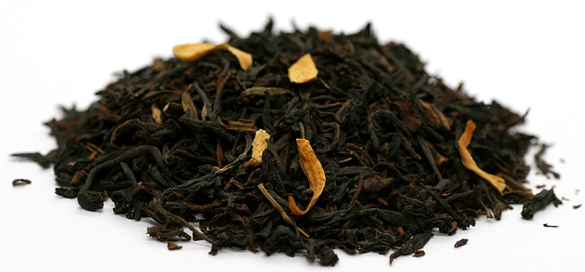
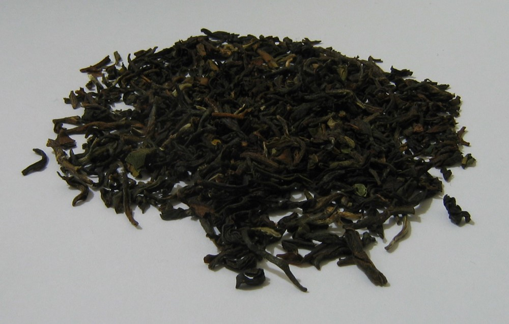
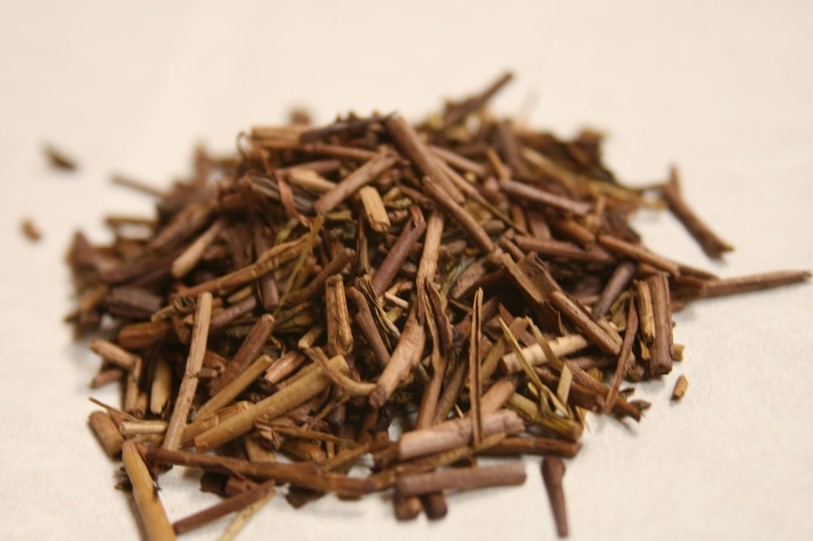
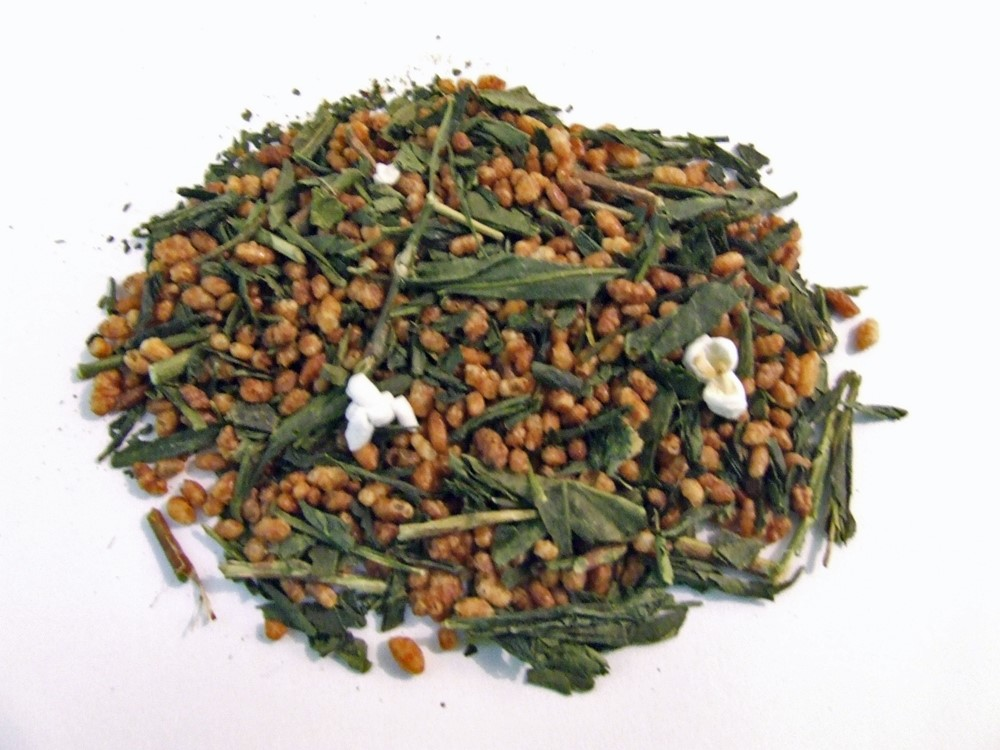

Ragam Teh Berperisa di Dunia

Siapa sih yang belum pernah menikmati teh? Dari menjadi teman sarapan dengan jajanan pasar di pagi hari, pendamping sepiring nasi pada saat
makan siang, hingga pengiring waktu bersantai di sore hari dengan kue-kue dan biskuit, teh telah lama mengakar dalam kehidupan masyakarat
Indonesia.
Menurut data dari Food and Agricultural Organization of the United Nations1 mengenai
bahan pangan, Indonesia menempati peringkat ke-8 (delapan) dalam jumlah kuantitas produksi teh pada tahun 2018, terhitung sebanyak 141.342
ton. Sementara menurut data dari Euromonitor2, rata-rata konsumsi teh per kapita
di Indonesia pada tahun 2014 mencapai 1,007 pound atau setara dengan 456 gram teh per tahun.
Umumnya, masyakarat Indonesia mengenal teh hitam atau hijau sebagai dua jenis teh utama yang beredar di pasaran, beserta jajaran beberapa jenis
teh herbal atau infusion, yang dikemas baik dalam bentuk loose leaf (dedaunan), teabag (kantong teh), maupun teh instan dalam bentuk serbuk.
Namun, apakah kamu tahu bahwa sebenarnya ada banyak sekali varian teh yang diproduksi di belahan dunia? Varian ini biasa dihasilkan dengan
mengkombinasikan dedaunan teh beserta perisa alami tertentu, melalui proses peracikan yang telah terstandardisasi.
Artikel ini akan membahas mengenai beberapa jenis teh berperisa yang tersebar di berbagai penjuru bumi, serta beberapa produk teh komersial
bersangkutan yang dijual di pasaran.
Earl Grey

Earl Grey merupakan varian teh hitam yang memiliki aroma (dan sedikit rasa) citrus (sitrun/jeruk). Teh ini dibuat melalui peracikan daun
teh (biasanya teh hitam Assam atau Ceylon) yang dicampur dengan ekstrak buah bergamot, yang masih termasuk dalam keluarga buah sitrun.
Ekstrak ini bisa berupa ekstrak alami yang diambil langsung dari buahnya (terutama kulit bergamot yang telah dikeringkan), maupun ekstrak
sintetis dalam bentuk essential oil (minyak esensial)3
4.
Teh Earl Grey dapat membantu kita menjaga kesehatan, berkat kandungan antioksidan yang terdapat pada dedaunan teh dan bergamot, yang bisa
menangkal radikal bebas dan inflamasi. Ini akan memberikan tubuh kemampuan yang lebih dalam melawan berbagai penyakit beresiko tinggi, seperti
penyakit jantung dan sebagian jenis kanker. Selain itu, Earl Grey juga dapat mengurangi tingkat stress, menyehatkan saluran pencernaan,
mempercepat penyembuhan flu, menjaga kesehatan gigi, dan membantu memperbaiki mood dan emosi5
6.
Produk komersial teh Earl Grey yang terdapat di pasaran antara lain adalah Earl Grey & Lady Grey (Earl Grey dengan tambahan lemon) dari
Twinings7 dan Earl Grey dari Dilmah8.
Darjeeling

Darjeeling merupakan jenis teh hitam yang memiliki ciri khas beraroma bunga-bungaan. Warna teh ini tidak terlalu kecoklatan dibandingkan
dengan teh hitam biasanya. Rasanya lebih ringan dari teh pada umumnya, namun tetap punya kekhususan tersendiri dikarenakan
aromanya9. Teh ini tumbuh di distrik Darjeeling, Bengal Barat,
India10.
Teh Darjeeling dapat digunakan sebagai minuman pendamping dalam kegiatan mengurangi berat badan, melawan radikal bebas, mengembangkan
imunitas tubuh, mengurangi dampak Parkinson's Disease, dan menjaga kesehatan tulang dalam melawan penyakit seperti
osteoporosis11 12.
Produk komersial teh Darjeeling yang ada di pasaran antara lain teh Darjeeling dari Twinings13
dan Dilmah14.
Hojicha

Hojicha adalah teh hijau yang berasal dari Jepang. Keunikan teh ini adalah warna daunnya yang lebih mengarah ke coklat kemerahan, dibandingkan
dengan teh hijau Jepang lainnya yang cenderung berwarna kuning kehijauan. Ini disebabkan oleh proses pemanggangan daun teh, yang membuat hojicha
memiliki aroma seperti tanah dengan sedikit perisa manis dan umami. Karena proses pemanggangan tersebut, Hojicha tidak memiliki rasa pahit yang
mencolok, dan memiliki kandungan kafein yang sangat rendah (0,13 gram per 100 gram Hojicha, dibandingkan dengan matcha yang memiliki 3,2 gram
kafein per 100 gramnya)15
16.
Teh Hojicha seperti kebanyakan teh pada umumnya dapat membantu menjaga tubuh dari penyakit-penyakit berat, meningkatkan sistem imun, memperbaiki
level stres, merawat kesehatan gigi, dan menjadi suplemen dalam program diet. Namun, teh ini juga mampu merawat kulit agar tetap muda, serta
meringankan nyeri yang diakibatkan oleh arthritis. Kandungan kafein yang rendah pada Hojicha juga membuatnya dapat dinikmati oleh kalangan
masyarakat yang memiliki sensitivitas tinggi terhadap kafein17
18.
Hojicha sendiri tidak umum ditemukan secara komersial di toko atau supermarket, namun dijual oleh para peritel yang berfokus pada produk
teh maupun kulineri lainnya, seperti Ippodo Tea19 dan Sugimoto
Tea20.
Genmaicha

Genmaicha merupakan teh hijau Jepang yang dikombinasikan dengan beras putih atau merah yang dipanggang, dengan rasio 1:1 antara daun teh
dan beras. Pencampuran ini memberikan sedikit rasa nutty dan earthy, yang membuat genmaicha memiliki perisa yang khas dan lebih mudah
diterima oleh orang-orang yang belum pernah mencicipi teh hijau21. Genmaicha
dulunya merupakan jenis teh yang populer di kalangan masyarakat Jepang yang kurang berada, dikarenakan mahalnya harga teh pada zaman dahulu
kala. Meracik teh dangan beras panggang dapat menekan harga pengeluaran untuk konsumsi teh dan meringankan pengelolaan finansial rakyat
Jepang22.
Genmaicha dapat membantu dalam regulasi tiroid, detoksifikasi, penyeimbangan tingkat gula darah, menjaga tingkat kolestrol, serta manfaat
teh lainnya seperti antioksidan, mempertahankan berat badan, perawatan gigi, dan mengurangi resiko terkena penyakit jantung ataupun
kanker23 24.
Teh ini lebih sering ditemui pada situs peritel teh dan kulineri, seperti The Tea Makers of London25 dan Clearspring26.
Itulah sebagian kecil dari bermacam-macam varian teh yang ada di dunia. Semoga artikel ini dapat memberi motivasi bagimu untuk bereksplorasi
lebih mendalam lagi, baik sebagai bagian dari hobi, sekedar mencari pengetahuan, atau bahkan memulai bisnis dalam industri food & beverage,
seperti membuka kafe atau outlet beraneka ragam minuman yang menggunakan teh sebagai bahan dasarnya.